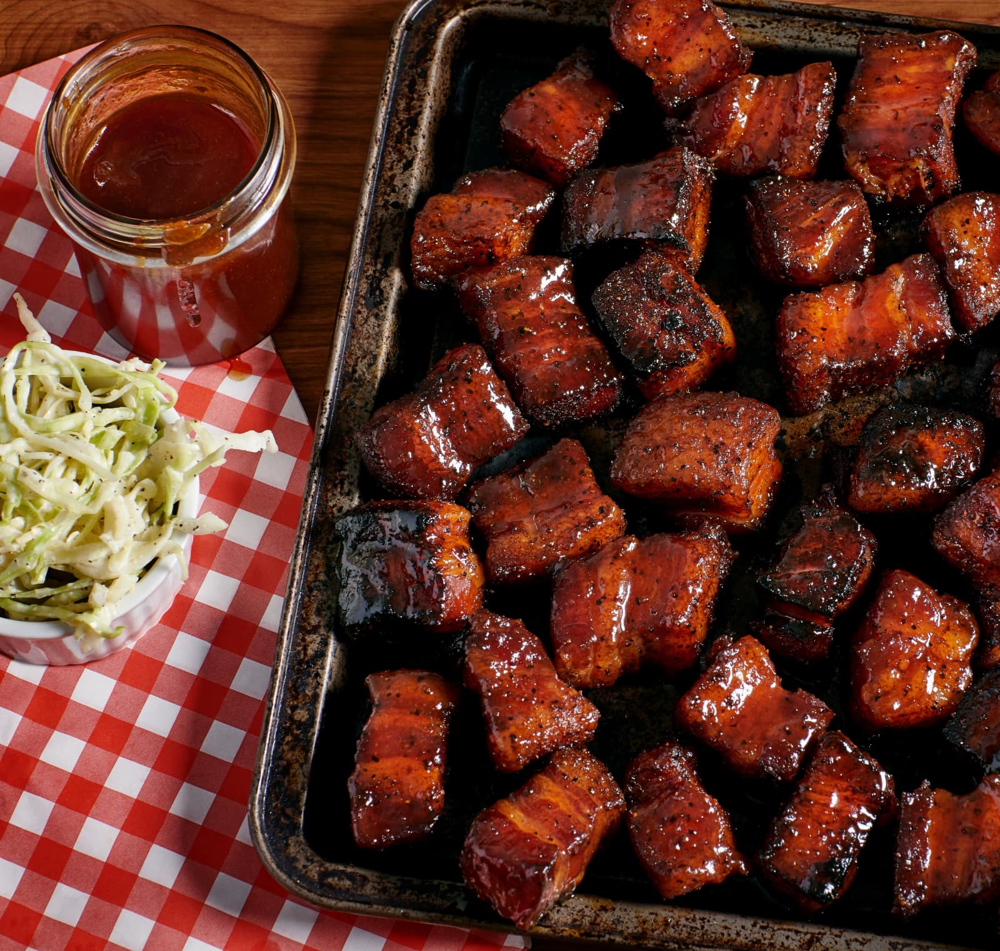

Smoked Pork Belly Burnt Ends

Description
Smoked pork belly burnt ends are tender, bursting with flavor and easy to make. Smoke 'em low and slow, then top 'em off with sweet and sticky barbecue sauce for a bite-size crowd pleaser.
Ingredients
Pork and Seasoning
- 1 whole pork belly, 8-10 pounds
- 3/4 cup brown sugar
- 1/4 cup paprika
- 1 tablespoons salt
- 1 tablespoon chili powder
- 1 tablespoon garlic powder
- 1 tablespoon onion powder
- 2 teaspoons black pepper
Sweet and Stick Barbecue Sauce
- 1 cup ketchup
- 1/2 cup brown sugar
- 1/4 cup apple juice
- 2 tablespoons apple cider vinegar
- 1 teaspoon salt
- 1/2 teaspoon onion powder
- 1/2 teaspoon garlic powder
- 1/4 teaspoon cayenne pepper
Steps
- Slice the pork belly into 1 1/2 inch cubes.
- Preheat your smoker to 275°F.
- Combine the brown sugar, paprika, salt, chili powder, garlic powder, onion powder and black pepper, mixing to break up any lumps. Generously spread the mixture over the pork belly cubes, rotating the cubes to ensure that all sides are equally seasoned.
- Place the pork belly cubes in your smoker. Close the lid and cook for 2 hours.
- Transfer the pork belly cubes onto a large aluminum drip pan and cover with aluminum foil. Place the pan into your smoker for another 2 hours.
- Combine all ingredients for the Sweet & Sticky Barbecue Sauce into a saucepan and bring to a simmer for 10 minutes.
- Uncover the aluminum pan and drain all liquid. Pour the Sweet & Sticky Barbecue Sauce over the pork belly burnt ends and mix until all cubes are evenly coated.
- Place the pan back into the smoker and raise the temperature of the smoker to 350°F. Cook for an additional 10-15 minutes.
- Remove the pan from your smoker and let rest at room temperature for 20 minutes before serving.